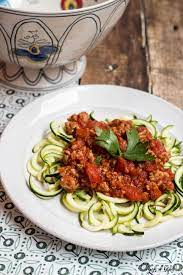

Back to the MAIN PAGE
Turkey Spaghetti Zoodles

Description
Zoodle spaghetti with turkey meat sauce makes a light yet satisfying meal that's full of fabulous flavor. This sauce works equally well with pasta (or a combo of pasta and zoodles) if you prefer.
Zoodle spaghetti with turkey meat sauce has a lot going for it. Spiralized zucchini gets flash-sautéed to crisp-tender perfection and then blanketed in a flavorful, hearty but not heavy turkey meat sauce.
Ingredients
- 1 teaspoon extra-virgin olive oil
- 1 1/4 pounds ground turkey breast
- 1 cup diced green bell pepper
- 1 tablespoon minced garlic
- 2 teaspoons Italian seasoning
- 1/2 teaspoon ground black pepper
- 1/4 teaspoon salt
- 1/4 teaspoon red pepper flakes
- 3 cups marinara sauce
- 2 cups baby spinach leaves
- 4 zucchini, cut into noodle-shape strands
Step by step instructions
- Heat olive oil in a large skillet over medium heat. Add turkey breast, green pepper, garlic, Italian seasoning, ground black pepper, salt, and red pepper flakes; cook and stir until turkey is lightly browned, 4 to 5 minutes.
- Stir marinara sauce and baby spinach into the turkey mixture; cook and stir until marinara sauce is warm through, about 3 minutes.
- Stir zucchini noodles into the sauce with tongs; cook and stir until the zucchini is slightly tender, 2 to 3 minutes.